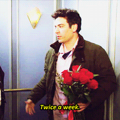
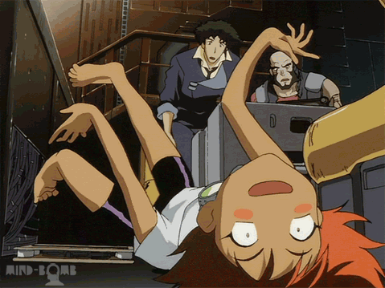
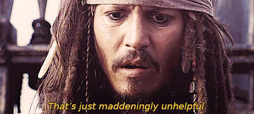
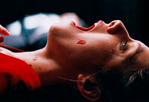

🔬 Baseline vs Enhanced Comparison
System Comparison
BASELINE (Current): Emotion (ResNet50) + Objects (YOLO) + Action (VideoMAE) + Templates
ENHANCED (Proposed): Baseline + Scene Understanding (VGG16) + LLM Synthesis (Groq)
Goal: Show specific improvement from VGG16 + LLM integration
#1: 11DPmCCwl0SSis

Detected: Emotion: positive_calm | Action: gargling | Objects: person
Scene (VGG16): real, indoor, bright lighting
"a peaceful person gargling"
"Serene real person gargling in a bright indoor space in this animated clip"
#2: 11moFh8H3k9M7S

Detected: Emotion: positive_calm | Action: none | Objects: person, tie, tie
Scene (VGG16): real, indoor, bright lighting
"someone calmly relaxing near a tie"
"Serene real person adjusts two ties while moving indoors under bright lighting in this animated scene."
#3: 5vsp9FqLBVk4g

Detected: Emotion: negative_intense | Action: situp | Objects: person, person
Scene (VGG16): animated, indoor, dim lighting
"someone situping frustratedly"
"Furious animated person sits up beside another in a dimly lit indoor scene."
#4: GNGBfs76E3mGk

Detected: Emotion: negative_intense | Action: none | Objects: scissors
Scene (VGG16): animated, indoor, moderate lighting
"someone horrifiedly running near a scissors"
"Furious animated character moves quickly indoors with scissors in moderate lighting."
#5: 4yQNYx10VVOb6

Detected: Emotion: positive_calm | Action: slapping | Objects: person
Scene (VGG16): real, indoor, moderate lighting
"someone feeling relaxed while slapping"
"Serene real person slapping someone indoors in moderate lighting animated scene"
#6: J8Bb15275wt4A

Detected: Emotion: negative_intense | Action: yawning | Objects: person
Scene (VGG16): real, indoor, moderate lighting
"a scared person yawning"
"Furious real person yawning in a moderately lit indoor room"
#7: oD0YFMXHpwxDq

Detected: Emotion: positive_energetic | Action: reading book | Objects: none
Scene (VGG16): animated, outdoor, moderate lighting
"someone reading book delightedly"
"Excited animated character reading book outdoors under moderate lighting."
#8: 13yyvZdx0W6kTK

Detected: Emotion: surprise | Action: crying | Objects: person
Scene (VGG16): animated, indoor, moderate lighting
"a bewildered person crying"
"Astonished animated person bursts into crying fit indoors under moderate lighting."
#9: VZ931BnGGAFoc

Detected: Emotion: surprise | Action: none | Objects: person, person
Scene (VGG16): real, indoor, moderate lighting
"someone feeling speechless while stepping back"
"Astonished real person bumps into another in a moderately lit indoor space with sudden movement."
#10: ws4pzeC916KRO

Detected: Emotion: negative_subdued | Action: none | Objects: person
Scene (VGG16): real, indoor, moderate lighting
"a somber person sitting"
"A sad animated person walks slowly in a moderately lit indoor room."
#11: 14eQNo68VAXUfS

Detected: Emotion: negative_subdued | Action: crying | Objects: person, person, person
Scene (VGG16): animated, indoor, dim lighting
"a sad person crying"
"Sad animated person crying with two others in dim indoor scene"
#12: 48c6Ky52T6HcI

Detected: Emotion: negative_intense | Action: none | Objects: none
Scene (VGG16): real, indoor, moderate lighting
"a frustrated person yelling"
"Furious real person moves quickly in a moderately lit indoor space in this animated clip"
#13: 3YsEPo1u3C8dW

Detected: Emotion: positive_calm | Action: brush painting | Objects: person, person, potted plant
Scene (VGG16): animated, indoor, moderate lighting
"a soothing person brush painting with a potted plant"
"Serene animated person brush painting near another person and potted plant indoors."
#14: A9grgCQ0Dm012

Detected: Emotion: surprise | Action: none | Objects: person, person, fire hydrant
Scene (VGG16): real, indoor, moderate lighting
"a astonished person freezing with a fire hydrant"
"Astonished animated person runs past another person near a fire hydrant indoors."
#15: 44L0gIN94vMEE

Detected: Emotion: positive_energetic | Action: none | Objects: dog
Scene (VGG16): animated, indoor, dim lighting
"someone excitedly running with a dog"
"Happy animated dog runs around in a dimly lit indoor room"
#16: L29fiOMSDhhvi

Detected: Emotion: negative_intense | Action: whistling | Objects: person, person, tie
Scene (VGG16): real, indoor, dim lighting
"someone enragedly whistling near a tie"
"Furious real person whistling at another in dim indoor room, one wearing a tie."
#17: Plv18qor1IdHi

Detected: Emotion: contempt | Action: none | Objects: person
Scene (VGG16): real, indoor, dim lighting
"someone feeling snide while rolling eyes"
"Dismissive person walks away in dimly lit indoor space in this animated GIF."
#18: VxLkYEkjHviP6

Detected: Emotion: contempt | Action: playing poker | Objects: person, person, person
Scene (VGG16): animated, indoor, moderate lighting
"a contemptuous person playing poker"
"Dismissive animated person beats two others playing poker indoors."